Sequel Pro
Sequel Pro：数据库工具- 可用来管理MySQL数据库
- 可用来管理MySQL数据库
Sequel中新建mysql数据库并新建表和相应字段
sequel中，创建对应的mysql数据库，以及在数据库中创建对应的表，和相应字段
点击左上角的按钮，选择：Add Database：
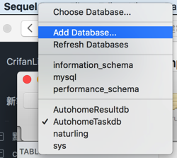
输入数据库信息：
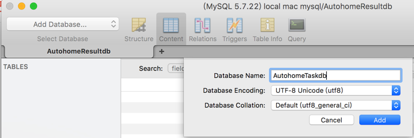
Database Name：AutohomeProjectdbDatabase Encoding:UTF-8 Unicode(utf8)Database Collation:Default (utf8_general_ci)
再去切换到，刚建好的数据库：AutohomeProjectdb
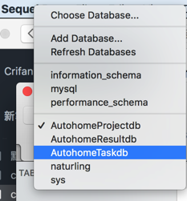
再去创建对应的table：
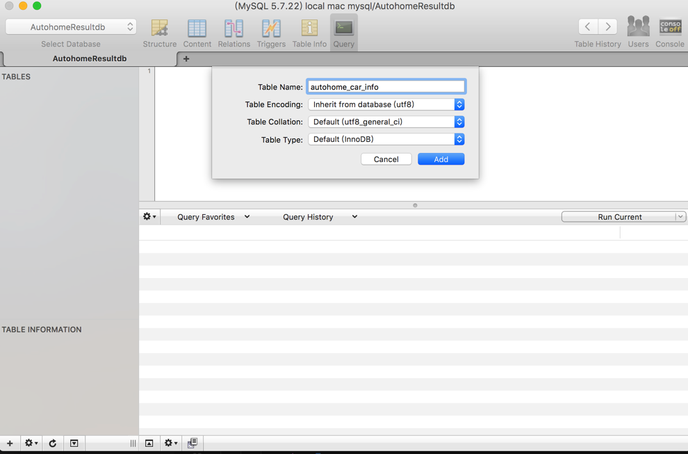
Table Name：autohome_car_infoTable Encoding:inherit from database (utf8)Table Collation:Default (utf8_general_ci)Table Type:Default (InnoDB)
点击Add
然后有了主键id
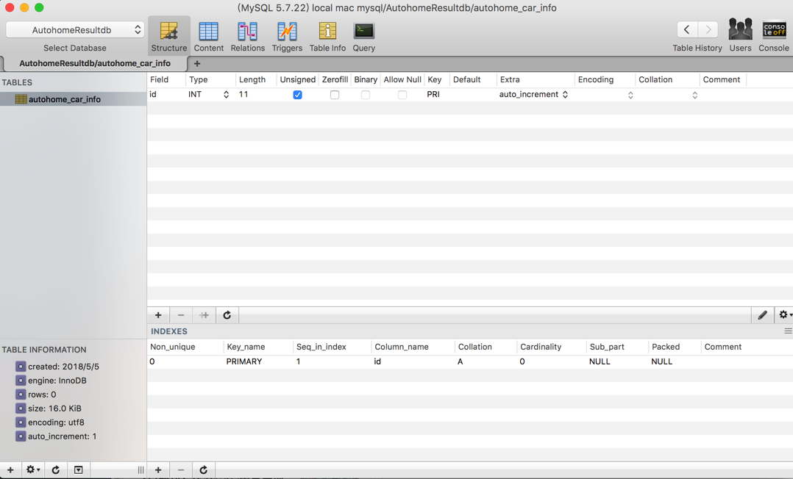
且默认已经帮忙配置好了auto increment=自增
再去添加其他字段：
点击左下角的+，去新建字段
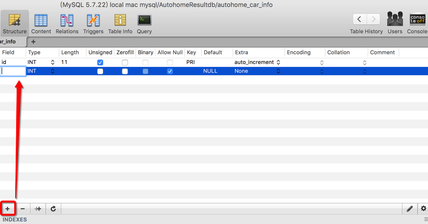
相关属性解释：
PK=primary key=主键NN=not null=非空UQ=unique=唯一BIN=binary=二进制数据：比text更大UN=unsigned=无符号：非负数ZF=zero fill=填充0：例如字段内容是1 int(4), 则内容显示为0001AI=auto increment=自增
此处调整字段属性为自己的需求：
- 没必要
ZF，所以去掉- 取消勾选
ZeroFill
- 取消勾选
- 也不允许NULL，默认为0
- 取消勾选
Allow Null
- 取消勾选
Extra为空Extra改为None
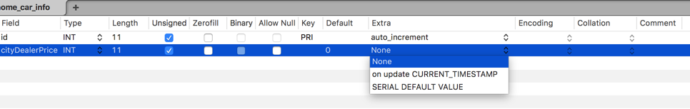
用类似方式，再去新建其他字段
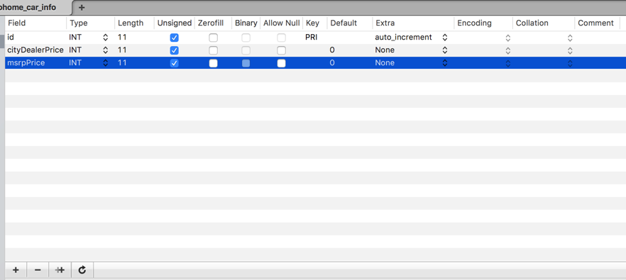
最后新建的各个字段为：
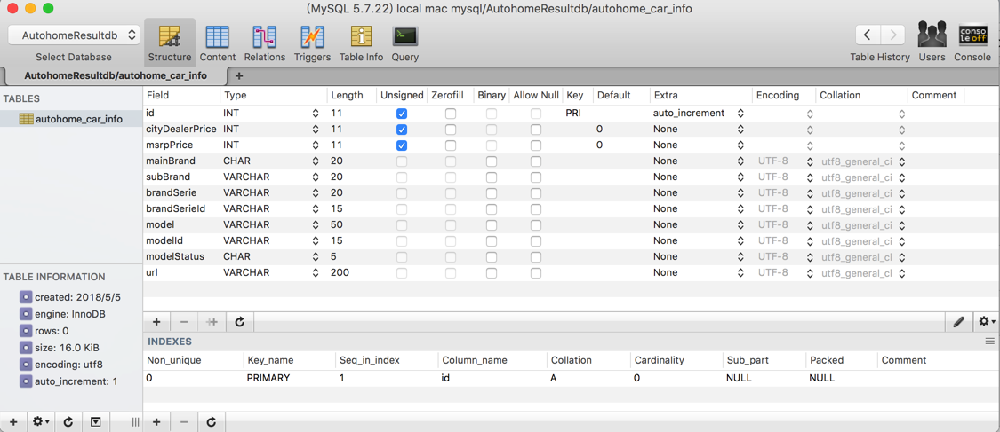
其中：
- 字段
mainBrand=主品牌：类型是CHAR- 设计考虑点是
char(n)：适合保存，基本上确定了不会超过n个字符的，个数变化不大的- 此处汽车主品牌的名字，不会太长，所以用
CHAR，暂定最多20个字符
- 此处汽车主品牌的名字，不会太长，所以用
varchar(n)：适合保存，基本上不太会超过n个字符，但是个数可能会变化的
- 设计考虑点是
使用心得
刷新
比如 导入了数据到MySQL中之后，需要刷新：
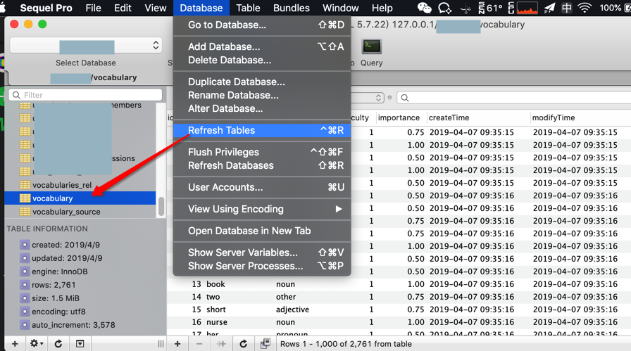
才能看到最新（已导入）的数据。
拷贝已有内容为sql语句
对于之前手动录入的内容，全选后，右击，支持：Copy as SQL INSERT
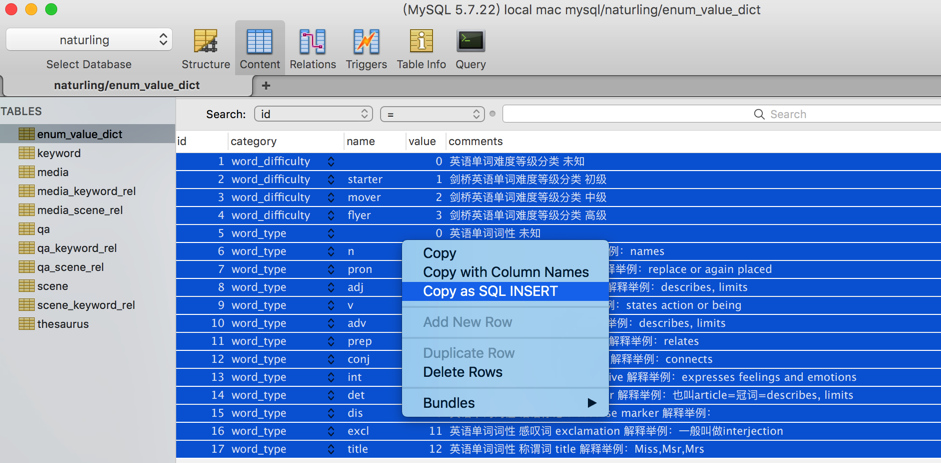
从而拷贝出sql语句：
INSERT INTO `enum_value_dict` (`id`, `category`, `name`, `value`, `comments`)
VALUES
(1, 'word_difficulty', '', 0, '英语单词难度等级分类 未知'),
(2, 'word_difficulty', 'starter', 1, '剑桥英语单词难度等级分类 初级'),
(3, 'word_difficulty', 'mover', 2, '剑桥英语单词难度等级分类 中级'),
(4, 'word_difficulty', 'flyer', 3, '剑桥英语单词难度等级分类 高级'),
(5, 'word_type', '', 0, '英语单词词性 未知'),
(6, 'word_type', 'n', 1, '英语单词词性 名词 noun 解释举例：names'),
(7, 'word_type', 'pron', 2, '英语单词词性 代词 pronoun 解释举例：replace or again placed'),
(8, 'word_type', 'adj', 3, '英语单词词性 形容词 adjective 解释举例：describes, limits'),
(9, 'word_type', 'v', 4, '英语单词词性 动词 verb 解释举例：states action or being'),
(10, 'word_type', 'adv', 5, '英语单词词性 副词 adverb 解释举例：describes, limits'),
(11, 'word_type', 'prep', 6, '英语单词词性 介词 preposition 解释举例：relates'),
(12, 'word_type', 'conj', 7, '英语单词词性 连词 conjunction 解释举例：connects'),
(13, 'word_type', 'int', 8, '英语单词词性 疑问词 interrogative 解释举例：expresses feelings and emotions'),
(14, 'word_type', 'det', 9, '英语单词词性 限定词 determiner 解释举例：也叫article=冠词=describes, limits'),
(15, 'word_type', 'dis', 10, '英语单词词性 话语标记 discourse marker 解释举例：'),
(16, 'word_type', 'excl', 11, '英语单词词性 感叹词 exclamation 解释举例：一般叫做interjection'),
(17, 'word_type', 'title', 12, '英语单词词性 称谓词 title 解释举例：Miss,Msr,Mrs');
后续可用于其他地方，比如：
去另外一个在线mysql中插入同样内容
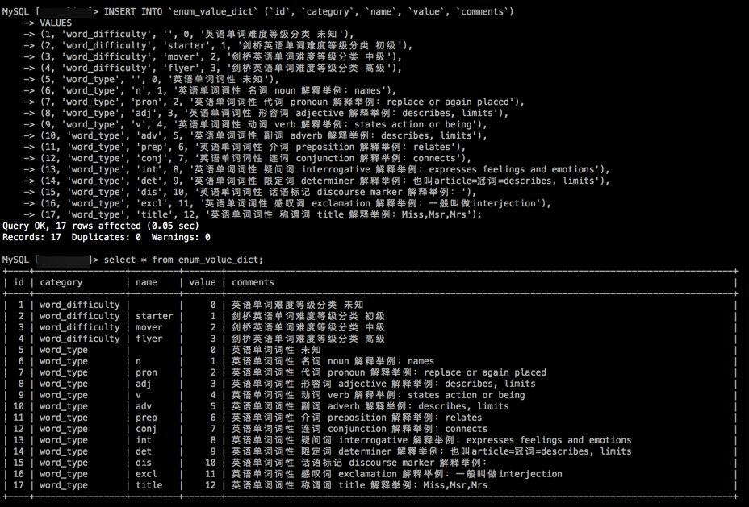
常见问题
Unable to connect to host 127.0.0.1, or the request timed out
- 现象
在Mac中，虽然之前用mysql的命令行把安装时的临时密码修改过了，且终端中也可以用：
mysql -u root -p
再输入密码，而进去mysql了。
但是此处工具Sequel Pro中，却无法连接：
- host：
127.0.0.1 - user：
root - password：xxx
- port：
3306
而报错：
Connection Failed
Unable to connect to host 127.0.0.1, or the request timed out

而再去找具体提示中的原因是：
Your password has expired. To log in you must change it using a client that supports expired passwords.
而具体解决办法是：
再去终端中进去mysql：
mysql -u root -p
然后，先选择对应的mysql数据库：
>use mysql;
会提示你：
ERROR 1820 (HY000): You must reset your password using ALTER USER statement before executing this statement.
然后才能设置新密码：
SET PASSWORD = PASSWORD('yourNewPassword');
(如果需要)再去设置密码不过期：
use mysql;
update user set password_expired='N' where user='root';
最后记得保存/同步/更新后再退出：
flush privileges;
quit
然后Sequel Pro中就可以用新密码去正常连接了。
运行多行mysql语句
sequel中，要是运行多行sql语句，则
- 应该是：
Run All Queries- 图
- 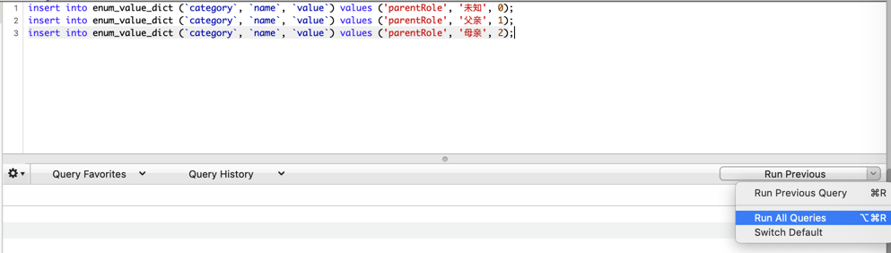
- 底部提示的执行结果中，才能看到想要的：
N rows affected
- 图
- 而不是：
Run Previous- 否则多行语句，只能执行最后一行，之前的行，不会执行
- 底部提示的执行结果中，也只能看到：
1 rows affected
删除表出错：MySQL said: Cannot delete or update a parent row: a foreign key constraint fails
Sequel中，去右键删除某个表：
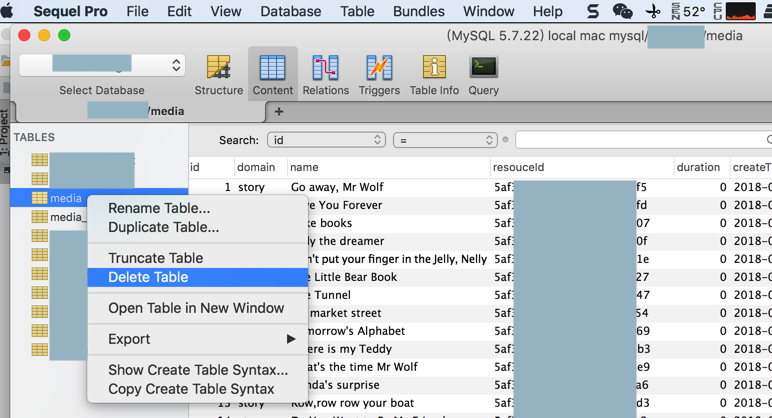
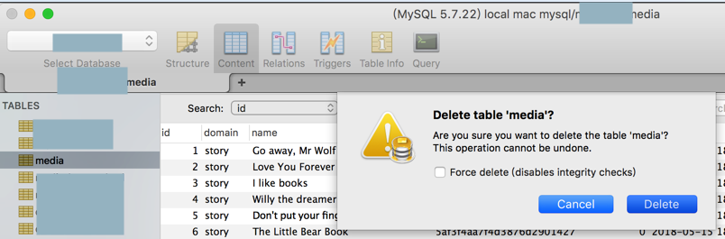
结果报错：
Error
Couldn't delete 'media'.
Selecting the 'Force delete' option may prevent this issue, but may leave the database in an inconsistent state.
MySQL said: Cannot delete or update a parent row: a foreign key constraint fails
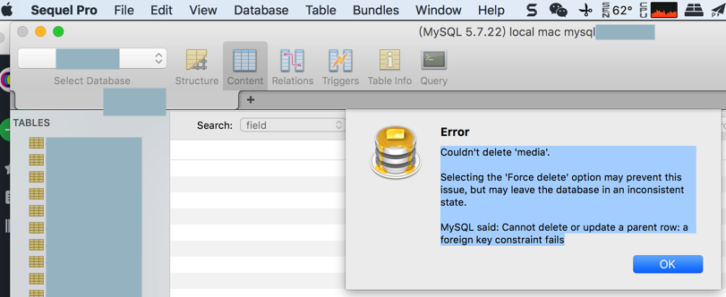
原因：此表某字段有外键和依赖关系
解决办法：
- 关闭（外键检查的）限制
SET FOREIGN_KEY_CHECKS=0;
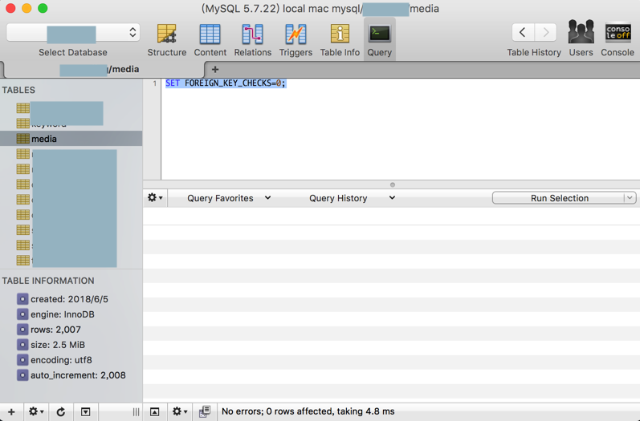
- 去操作，删除表
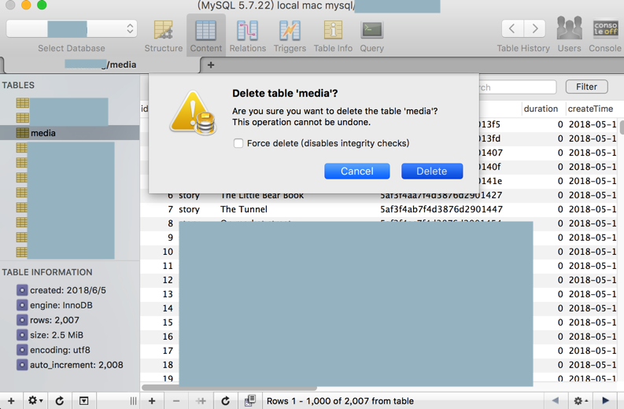
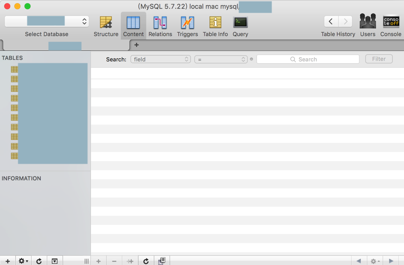
- （更新了个别字段后，重新）创建之前的表
CREATE TABLE `media` (
`id` int(11) NOT NULL AUTO_INCREMENT,
`domain` char(20) NOT NULL,
`name` char(200) DEFAULT NULL,
`resouceId` char(200) NOT NULL,
`duration` float DEFAULT NULL,
`createTime` datetime DEFAULT NULL,
`modifyTime` datetime DEFAULT NULL,
`createUser` int(11) DEFAULT NULL,
`modifyUser` int(11) DEFAULT NULL,
`active` char(1) DEFAULT 'Y',
`publisher` text,
`authors` char(50) DEFAULT NULL,
`series` char(200) DEFAULT NULL,
`seriesNumber` int(11) NOT NULL DEFAULT '1',
PRIMARY KEY (`id`)
) ENGINE=InnoDB DEFAULT CHARSET=utf8;
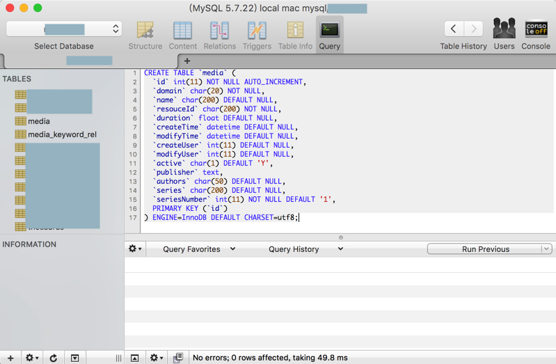
- 重新开启（外键检查的）限制
SET FOREIGN_KEY_CHECKS=1;
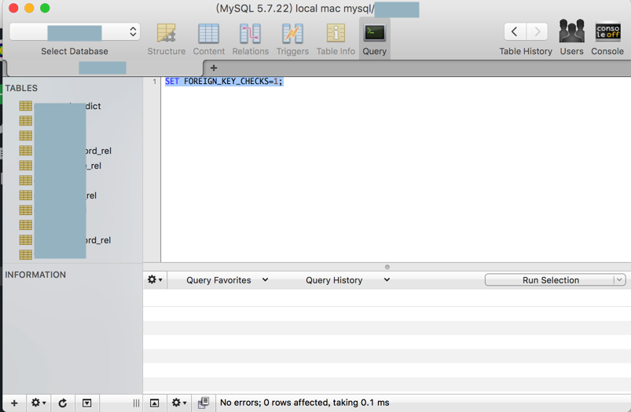
如此即可满足需求。
且之前的两个表（media_keyword_rel和media_scene_rel）的逻辑结构也还是没有变的，正常的外键依赖。